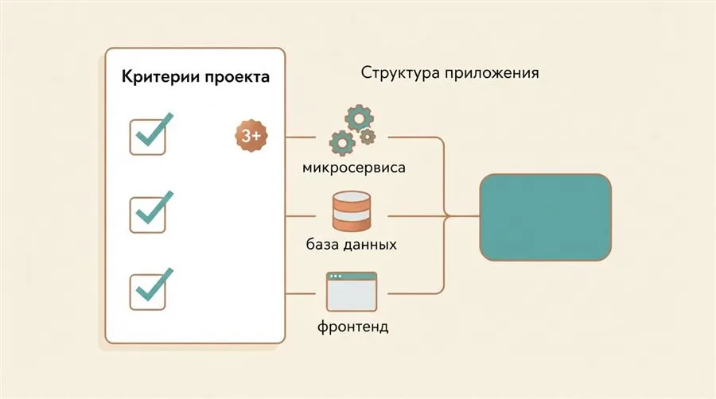
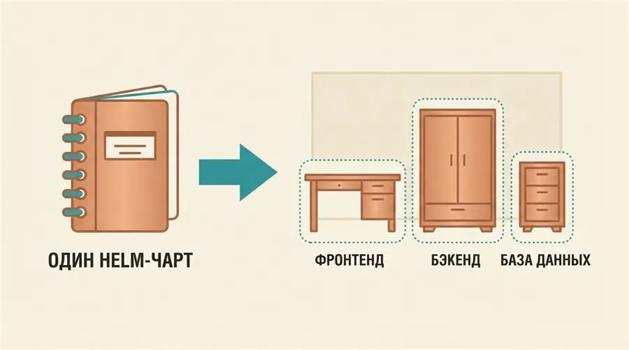
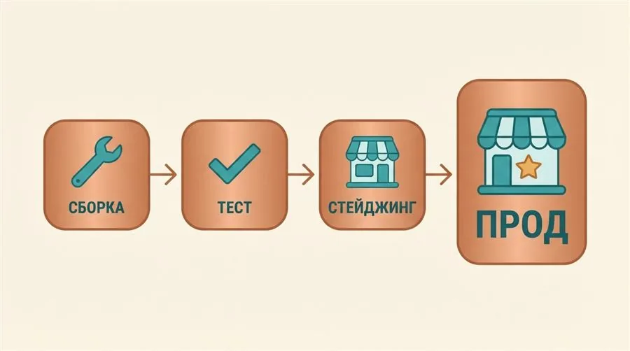
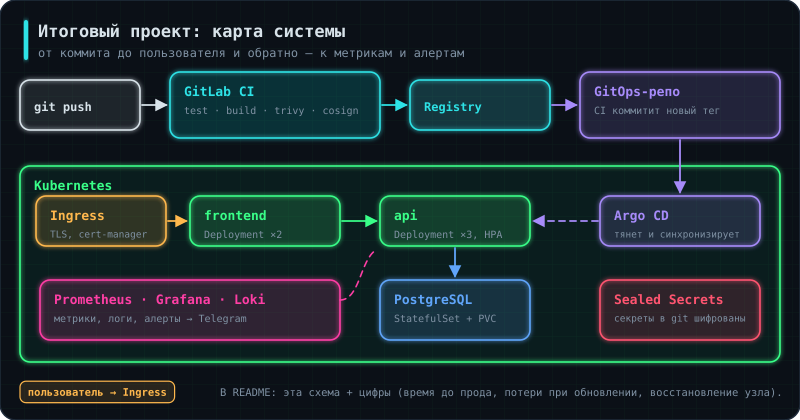

Задание 1 — выбор проекта
Выбери open-source проект из нескольких сервисов с базой по критериям §2 и опиши его архитектуру схемой.
Проверка: в README.md есть схема сервисов, их порты, зависимости и порядок запуска.
Все предыдущие уроки изучали отдельные кусочки DevOps по отдельности: контейнеризация (3.1), базовый CI/CD (3.2), Docker Compose (4.1), облако и инфраструктура кодом (4.2–4.4), наблюдаемость (4.5), Kubernetes (5.1–5.2), Helm и Kustomize (5.3), GitOps (5.4), CI/CD в кластере (6.1), безопасность конвейера (6.2). Итоговый проект — не новая технология, а проверка того, что все эти кусочки складываются в единый рабочий процесс на настоящем проекте, а не на примере, написанном специально для урока.
Аналогия: пройти курс вождения по отдельным упражнениям на закрытой площадке (парковка, разворот, змейка) — это одно. Проехать через весь город в реальном потоке машин, где всё это должно сработать вместе и в нужный момент — совсем другое.
Каждый предыдущий урок изолированно тренировал один навык на заранее подготовленном примере. Итоговый проект убирает эту подготовленность: нужно взять чужой, не адаптированный под учебный курс проект и самостоятельно решить, где и что из уже изученного арсенала применить — это гораздо ближе к тому, с чем реально сталкивается DevOps-инженер на новой работе.
Аналогия: для тренировки по вождению в потоке нужен не пустой пригород, а район с достаточным количеством перекрёстков, светофоров и другого транспорта — иначе тренировка не даст нужного опыта.
Хороший ориентир — проект, где есть хотя бы три сервиса, база данных и фронтенд. Например, демо-магазины, на которых сами разработчики показывают микросервисы: Google Online Boutique, OpenTelemetry Demo, eShop от Microsoft. Можно взять и свой магазин из уроков 2.5–6.1, добавив к нему фронтенд и пару сервисов. Такой набор — не случайная планка: он гарантирует, что придётся иметь дело с межсервисным взаимодействием (а не одним изолированным приложением, как в уроке 5.1), с постоянным хранилищем данных (аналогично 5.2), и с как минимум двумя разными типами контейнеров (backend и frontend), у которых обычно разные Dockerfile и порты.

Аналогия: если в выбранном доме не хватает розеток под конкретную технику — их приходится доустанавливать самостоятельно, а не выбрасывать саму технику.
FROM node:20-alpine
WORKDIR /app
COPY package*.json ./
RUN npm ci --production
COPY . .
EXPOSE 3000
CMD ["node", "server.js"]
Не каждый open-source проект имеет готовые Dockerfile для всех своих сервисов — иногда автор ожидал запуска напрямую на машине разработчика. В таком случае Dockerfile пишется по тем же принципам, что и в уроке 3.1: минимальный базовый образ, слои, которые редко меняются (установка зависимостей), ставятся раньше часто меняющихся слоёв (сам код).
Аналогия: модульный тест проверяет отдельную деталь ещё до того, как она попадёт в сборку всего автомобиля — в отличие от смоук-тестов, которые проверяют уже собранный автомобиль целиком на ходу.
from decimal import Decimal
def test_discount_is_applied_to_order_total():
order = Order(lines=[OrderLine(price=Decimal("1000.00"), qty=2)], discount_pct=10)
assert order.total == Decimal("1800.00")
В отличие от смоук-тестов из 5.2 Kubernetes в работе, §9 (которые проверяют уже развёрнутое приложение целиком через HTTP), модульные тесты проверяют одну функцию или класс изолированно, без реальной сети и базы данных — если у выбранного проекта нет тестов для ключевой бизнес-логики, их стоит добавить, чтобы стадия test в пайплайне проверяла не только сборку, но и корректность кода.
Аналогия: один Helm-чарт из урока 5.3 был мебельным конструктором на один шкаф. Здесь конструктор больше: одна инструкция описывает сразу несколько предметов мебели для одной комнаты — стол, стулья, полки — но все по-прежнему собираются одной командой.
mychart/
├── Chart.yaml
├── values.yaml
└── templates/
├── frontend-deployment.yaml
├── frontend-service.yaml
├── backend-deployment.yaml
├── backend-service.yaml
├── db-statefulset.yaml
└── db-service.yaml
Принцип из урока 5.3 не меняется — values.yaml задаёт параметры, templates/ содержит шаблоны с плейсхолдерами — но теперь в одном чарте описываются манифесты сразу для всех сервисов приложения: фронтенда, каждого бэкенд-микросервиса и базы данных. Один helm install поднимает всё приложение целиком, а не по частям вручную.

Аналогия: открывать кассу магазина раньше, чем на склад завезли товар, бессмысленно — покупатели придут к пустым полкам.
spec:
containers:
- name: backend
image: myapp/backend:1.0
# readinessProbe не даст поду backend
# считаться готовым, пока БД недоступна
readinessProbe:
httpGet:
path: /health
port: 8080
Backend-сервисы обычно зависят от базы данных: если backend стартует раньше, чем база готова принимать соединения, первые запросы будут падать с ошибками подключения. readinessProbe, проверяющий собственный /health-эндпоинт (который сам, в свою очередь, проверяет соединение с базой), не даёт Kubernetes считать под backend готовым принимать трафик, пока зависимость действительно не доступна.
Аналогия: если пайплайн из урока 6.1 просто выполнял команды деплоя, то GitLab Environment — это подписанная табличка на двери «Staging» или «Production», которая помогает GitLab (и человеку) не перепутать, куда именно сейчас идёт выкладка.
staging:
stage: staging
script:
- helm upgrade --install myapp ./mychart --namespace staging -f values-staging.yaml
environment:
name: staging
url: https://staging.example.com
rules:
- if: '$CI_COMMIT_BRANCH == $CI_DEFAULT_BRANCH'
Ключ environment связывает job с конкретным именованным окружением — GitLab начинает отслеживать историю деплоев именно в это окружение отдельно, показывает текущую развёрнутую версию в интерфейсе и позволяет настраивать для него отдельные права доступа (кто может деплоить именно в production, а не в любое окружение вообще).
Аналогия: четыре контрольные точки перед выпуском продукции: сборка, контроль качества, тестовый склад (staging) и настоящая витрина магазина (production), куда товар попадает только после того, как всё остальное подтвердило готовность.
stages:
- build
- test
- staging
- prod
prod:
stage: prod
script:
- helm upgrade --install myapp ./mychart --namespace production -f values-prod.yaml
environment:
name: production
url: https://myapp.example.com
rules:
- if: '$CI_COMMIT_TAG'
when: manual
build и test работают так же, как в уроке 6.1 CI-CD в Kubernetes. staging обновляется автоматически каждым коммитом в основную ветку, prod — только по тегу релиза и по кнопке. Это два разных, полностью независимых окружения: разные namespace и разные values-*.yaml с разными настройками, например, разным количеством реплик или разным доменом. Если проект выкатывается через Argo CD (5.4 GitOps и Argo CD), стадии staging и prod не вызывают helm сами, а коммитят новый тег образа в репозиторий конфигурации.

Аналогия: пропуск на склад для сотрудников и пропуск в зал для покупателей могут вести физически в соседние двери, но выдаются они по разным правилам и разным людям.
# values-prod.yaml (фрагмент)
replicaCount: 3
resources:
limits:
cpu: "1"
memory: "1Gi"
Помимо namespace, values-prod.yaml для продакшна обычно отличается от values-staging.yaml по существу: больше реплик для отказоустойчивости, более строгие лимиты ресурсов, реальный домен вместо тестового. В реальных проектах environment production в GitLab дополнительно часто настраивают как protected — деплоить в него может не любой участник команды, а только те, кому явно выдано право.
Аналогия: бортовой журнал корабля: не только «куда приплыли», но и почему выбрали этот курс, где штормило и что сделали бы иначе.
Проект без документации для читателя не существует. Нужны два документа:
README — для того, кто впервые открыл репозиторий: что это за система, схема архитектуры, как запустить одной-двумя командами, где смотреть метрики. Подробно о нём — в §11.
Журнал архитектурных решений (ADR, Architecture Decision Records) — короткие файлы в папке docs/adr/, по одному на каждое заметное решение:
# 0003. Argo CD вместо helm upgrade из пайплайна
## Контекст
Пайплайну нужен был доступ администратора к кластеру; ручные правки в кластере никто не замечал.
## Решение
Выкатка через Argo CD, пайплайн только коммитит тег образа в репозиторий конфигурации.
## Последствия
+ у CI нет доступа к кластеру, дрейф виден в интерфейсе Argo CD
− ещё один компонент, который надо обновлять и мониторить
Через полгода никто не помнит, почему выбрали Kustomize, а не Helm, или зачем база вынесена из кластера. ADR отвечает на этот вопрос за минуту — и на собеседовании превращается в готовый рассказ о компромиссах, которые ты принимала осознанно. Скриншоты дашбордов, интерфейса Argo CD и зелёного пайплайна кладут в docs/ и показывают в README.
Аналогия: учебную задачу сдают проверяющему, который знает условие. Проект в портфолио читает незнакомый человек, у которого пять минут и десять таких же вкладок открыто.
Разница между «сделал учебный проект» и «есть проект, который показывают» — в упаковке. Формальный чек-лист закрывает первое; для второго нужно ещё несколько вещей.

README, написанный для чужого человека. Первые три абзаца должны отвечать: что это за система, как она устроена, как её запустить. Не «итоговый проект курса», а «микросервисное приложение, развёрнутое в Kubernetes с полным циклом доставки».
Схема архитектуры картинкой. Один рисунок экономит читателю пять минут чтения. Достаточно простой схемы: сервисы, база, вход трафика, куда идут метрики.
Числа вместо прилагательных. Это главное отличие. Не «настроен быстрый CI/CD», а:
Время от коммита до staging: 6 минут
Время от коммита до продакшена: 6 минут + ручное подтверждение
Потери запросов при обновлении под нагрузкой: 0 из 12 000
Время восстановления после отключения узла: 45 секунд
Подъём всего стека в чистом кластере: 8 минут, одна команда
Восстановление базы из резервной копии: 3 минуты, потеря до 24 часов данных
Каждое из этих чисел получается в практике предыдущих уроков. Их надо просто записывать по ходу дела, а не восстанавливать в конце.
Инструкция по восстановлению. Раздел «что делать, если отказал компонент X» показывает, что вы думали об эксплуатации, а не только о запуске. Это то, что отличает инженера от человека, прошедшего курс.
Пять маленьких репозиториев с учебными примерами читаются как пять учебных примеров. Один проект, доведённый до состояния, в котором его не стыдно эксплуатировать, — это разговор на сорок минут собеседования. Причём разговор, где вопросы задаёте не только вам: любая деталь такого проекта тянет за собой обсуждение реальных компромиссов.
Пройдитесь по списку честно. Каждый непройденный пункт — либо задача, либо осознанно принятое решение, которое надо уметь объяснить.
Приложение
SIGTERM — выкладка не рвёт запросы/healthz и /readyz, различающиеся по смыслуКластер
requests/limits у всех подовДоставка
Эксплуатация
Безопасность
Резервное копирование, которое ни разу не восстанавливали. Настроенный pg_dump создаёт ощущение защищённости, но копия, из которой не пробовали восстановиться, — это не резервная копия, а файл. Проверка восстановления занимает полчаса и даёт вам фразу, которую можно говорить вслух.
Аналогия: список технологий в резюме — это перечень инструментов в ящике. Работодателя интересует, что вы ими построили и что при этом сломали.
Схема ответа, которая работает: контекст → задача → решение → число → что бы сделал иначе.
«Взял открытый проект из четырёх сервисов без контейнеризации. Довёл до полного цикла: сборка, тесты, проверки безопасности, выкладка в Kubernetes через ArgoCD. От коммита до staging — шесть минут, обновление под нагрузкой без потерь запросов. Что бы сделал иначе — сразу разнёс код и конфигурацию по разным репозиториям, переделывать потом было дороже.»
Последний пункт важнее, чем кажется. Готовность назвать собственную ошибку читается как опыт: человек, у которого всё получилось идеально с первого раза, либо не делал, либо не заметил.
К каким уточняющим вопросам готовиться. Они предсказуемы, и на каждый в курсе есть ответ:
| Вопрос | Где разбиралось |
|---|---|
| Как устроен откат? | 5.3 (rollback), 5.4 (git revert) |
| Что происходит при выкладке с текущими запросами? | 3.1 (SIGTERM), 5.1 (пробы) |
| Почему база в StatefulSet, а не в Deployment? | 5.2 |
| Как приложение узнаёт пароль от базы? | 5.4, 6.2 |
| Что вы делаете, когда под в CrashLoopBackOff? | 5.1 |
| Как поймёте, что продакшн сломался? | 4.5 (оповещения) |
| Кто может выложить в прод? | 6.1 (защищённые окружения) |
Чего не делать: не выдавать прочитанное за сделанное. Проверяется это одним уточняющим вопросом, и провал такой проверки перечёркивает всё остальное. Честное «читал, но руками не делал» стоит несравнимо дороже.
Требования в вакансиях DevOps-инженера сейчас устроены довольно однообразно, и курс закрывает их основной объём.
Что просят практически всегда: Linux и сети, Docker, Kubernetes, CI/CD, Git, один язык для автоматизации (обычно Python или Bash), инфраструктура как код (Terraform, Ansible), мониторинг (Prometheus, Grafana).
Что просят часто: GitOps (ArgoCD), Helm, облачные платформы, базовый DevSecOps, работа с логами.
Что отличает старшие позиции: не длина списка технологий, а способность объяснить компромиссы, спроектировать процесс с нуля и отвечать за надёжность в числах.
Особенности российского рынка: заметная доля отечественных облаков (Yandex Cloud, VK Cloud, Selectel), запрос на импортозамещение отдельных компонентов, требования регуляторов у части работодателей. Английский чаще нужен для чтения документации, чем для разговора.
Особенности удалённых вакансий: разговорный английский становится обязательным, ценится опыт асинхронной работы и письменная коммуникация. Требования по стеку при этом ровно те же.
Ни один кандидат не закрывает список полностью — они и составляются с запасом. Разумная тактика: уверенно знать основу (Linux, сети, контейнеры, Kubernetes, CI/CD) и честно говорить про остальное. «С этим не работал, но разбирался с похожим — расскажу, как подошёл бы» звучит лучше, чем натянутый пересказ документации.
Курс заканчивается, но карта не заканчивается. Три направления, в которые обычно расходятся дальше:
Надёжность (SRE). Бюджеты ошибок, целевые уровни обслуживания, разборы инцидентов без поиска виноватых, нагрузочное тестирование, планирование ёмкости. Естественное продолжение линии 4.5.
Платформенная инженерия. Внутренние платформы, которые дают разработчикам самообслуживание: шаблоны сервисов, каталоги, автоматическое создание окружений. Продолжение линии 5.3–6.1.
Углублённая эксплуатация. Service mesh, OpenTelemetry и сквозная трассировка, наблюдаемость на основе eBPF, управление затратами в облаке.
Полезно также вернуться назад и углубить основу: сеть на уровне разбора трафика, Linux на уровне производительности и системных вызовов, базы данных на уровне планов запросов. Именно эти темы отличают того, кто чинит сложные проблемы, от того, кто перезапускает под и надеется.
Заметки и тренажёры остаются рабочим справочником. Перед собеседованием имеет смысл прогнать тренажёры по нужным урокам — вопросы там собраны из того, что действительно спрашивают. А раздел «Если запомнить только главное» в каждой заметке читается за пятнадцать минут и восстанавливает картину целиком.
Задания делаются на своей машине или в облаке. Отметь задание, когда выполнила проверку из его описания, — за каждое начисляется опыт.
Выбери open-source проект из нескольких сервисов с базой по критериям §2 и опиши его архитектуру схемой.
Проверка: в README.md есть схема сервисов, их порты, зависимости и порядок запуска.
Напиши Dockerfile для каждого сервиса без готового образа, добавь модульные тесты бизнес-логики.
Проверка: docker compose up поднимает весь проект локально; тесты запускаются одной командой.
Собери чарт для всех сервисов с зависимостью от базы, миграциями в PreSync-хуке и разворачивай через Argo CD из отдельного репозитория конфигурации.
Проверка: на чистом кластере одно Application поднимает весь проект в Healthy.
Четыре стадии build → test → staging → prod, сканирование образов и секретов, ручное подтверждение продакшена, уведомления.
Проверка: изменение в коде проходит путь до продакшена без единой ручной команды, кроме кнопки подтверждения.
Подключи kube-prometheus-stack, дашборд четырёх золотых сигналов, алерты в Telegram и runbook. Напиши README и 3–5 записей журнала решений (ADR) по §10.
Проверка: чек-лист зрелости §12 закрыт; проект можно рассказать за 5 минут по §13.